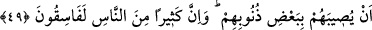

Bağını yaktığında, sana bir bağ dolusu üzüm ihsan eder
Yas, matem içinde neşe mutluluk verir
Kaybettiklerimiz şeylere karşılık madem ki ihsanlarda bulunuyor
Şu halde itiraz etmemize imkan yok
“Öyleyse hayırlı işlerde birbirinizle yarışın.” Yani iş zikrolunduğu gibi olduğuna
göre dünyâ ve âhirette sizin için daha hayırlı olan Kur’ân-ı Kerim’deki doğru inançlara
ve sâlih amellere koşun ve fırsattan faydalanıp yarışta üstünlüğü elde etmek için o
hayırlarda birbirinizle yarışın.
“Hepinizin dönüşü Allah’adır.” Yani îman edenlerin de etmeyenlerin de hepsinin
dönüşü Allah’adır.
“O, hakkında ihtilafa düştüğünüz şeyleri size haber verecektir.” Yani Allah haklı ile
haksızı birbirinden ayıracak karşılığı size verecektir. Böylece dünyâda din ve şerîat
konusunda ihtilaf ettiğiniz hususlarda hiçbir şek ve şüpheniz kalmayacak. Bu şekilde
ihtilaf edilen konuları Allah’ın haber vereceğinin ifade edilmesi, haber verme
vazifesinin gereği olarak ihtilâfı giderme mevkiinde söylendiği içindir.
49- Aralarında Allah’ın indirdiği ile hükmet ve onların arzularına uyma. Allah’ın
sana indirdiği hükümlerin bir kısmından seni saptırmalarından sakın. Eğer (Allah’ın
hükmünden) yüz çevirirlerse bil ki (bununla) Allah bazı günahları yüzünden onları
felâkete uğratmak istiyor. İnsanların çoğu zaten yoldan çıkmış(fâsıklar)lardır.
“Aralarında Allah’ın indirdiği ile hükmet ve onların arzularına uyma.” Bu âyet
yukarıdaki âyete atfedilmektedir. Yani, Kitâb’ı sana indirdik ve içinde olanlarla
hükmetmeni emrettik demektir.
“Allah’ın sana indirdiği hükümlerin bir kısmından seni saptırmalarından sakın.”
Yani bâtılı hak şeklinde göstererek azdan daha az bile olsa seni Allah’ın sana indirdiği
hükümlerin bir kısmından saptırmalarından, uzaklaştırmalarından sakın.
Ayette geçen fitne, yani “saptırma”dan maksat, haktan ayırıp bâtıla düşürmektir.
Nitekim Hz. Peygamber (a.s.)’ın “Hayâtın fitnesinden Sana sığınırım.”[324]
hadislerindeki ‘fitne’ kelimesi de doğru yoldan sapma mânâsınadır. Haktan bâtıla
çevrilen ve doğrudan uzaklaştırılan herkes fitneye uğratılmış olur.
Rivayete göre Yahûdî âlimleri kendi aralarında: “Muhammed’e gidelim. Olur ki onu
dîninden saptırırız.” dediler. Sonra onun (s.a.) yanına varıp şöyle dediler: “Ey Ebe’l-